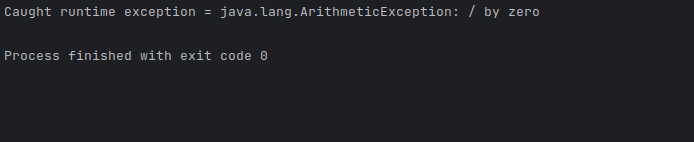
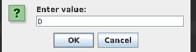
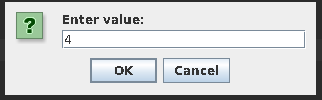
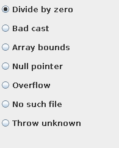
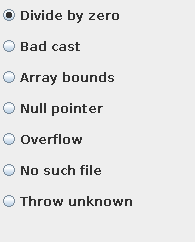

Lab 7: Exception Handling
Using IntelliJ you are going to do some error handling exploration.
-
Open IntelliJ
-
Create a new project
- Call it
ErrorHandlinglike the screen shot below. - Note you can use any JDK for this exercise, I am using JDK 17.0.6

- Call it
Step 1
Reproduce the following to set up the project

Now you can edit main() with the following code, then compile and run.
-
We are explicity calling the
println()from the function from theSystemlibrary. -
You can do this implicitly just by writing
println(...) -
I would recommend the former, until you undestand this.
You should see the following output in the Run terminal...

Modify the Main.kt as shown below. The change is to catch an exception through try-catch block.
try{
System.out.println(3/0);
}
catch(e : Exception){
System.out.printf("Caught runtime exception = %s\n", e);
}
If you run the program again you should get the following output:

Modify the Main.java as shown below. The change is to use more specific Exception class, ArithmeticException in this case.
try{
System.out.println(3/0);
}
catch( e : ArithmeticException ){
System.out.printf("Caught runtime exception = %s\n", e);
}
If you run the program again you should get the following output:

Let's try changing the Exception Class, to NumberFormatExpression.
try{
System.out.println(3/0);
}
catch( e : NumberFormatException){
System.out.printf("Caught runtime exception = %s\n", e);
}

For fun, do the following, what happens and why?
try{
System.out.println(3/0);
} catch( e : ArithmeticException){
System.out.printf("Caught runtime exception = %s\n", e);
System.out.println(3/0);
}
Step 2: Catch multiple exceptions
Reproduce the following code:
import javax.swing.JOptionPane
fun main(args: Array<String>) {
// Enter the following values and see what exception is caught.
// 0, 4, character, <no value>
try {
val value = JOptionPane.showInputDialog(null, "Enter value:")
// Non-numeric value will result an NumberFormatException
val divisor = value.toInt()
// If the divisor is 0, it will result in ArithmetricException
println(3 / divisor)
} catch (e: NumberFormatException) {
println("Exception caught by this program: Enter numeric value.")
} catch (e: ArithmeticException) {
println("Exception caught by this program: Divisor was 0.")
}
println("After exception.")
}
You'll notice that we are now importing a library on line 2 import javax.swing.JOptionPane; we now will be able to have a GUI.
- Build and run the program
- Observe Input dialog box appears.
- Enter 0 in the field.
- Click OK.

Notice that the exception was caught.

- Build and run the program
- Observe Input dialog box appears.
- Enter 4 in the field.
- Click OK.

Notice that the No exception was caught as it was not needed

What happens when you enter a character or nothing instead?
Step 3
- Either start a new project or remove what you have done before
You are now going to implement a larger program that illustrates many different types of Exception's
-
Import the following libraries at the top of the script:
import java.awt.Frame import java.awt.GridLayout import java.awt.event.ActionEvent import java.awt.event.ActionListener import java.awt.event.WindowAdapter import java.awt.event.WindowEvent import java.io.FileInputStream import javax.swing.ButtonGroup import javax.swing.JFrame import javax.swing.JPanel import javax.swing.JRadioButton -
Modify the
mainclass line:// Create a class Main that extends JFrame and implements ActionListener class Main : JFrame(), ActionListener { -
After updating
mainin step 2, add declare and initialise a private immutable array of Doubles with two elements with values0.0.Solution
private val a = arrayOf<Double>(0.0,0.0) // Create an array of Doubles -
Now create these
JButtonobjects:- divideByZeroButton
- badCastButton
- arrayBoundsButton
- nullPointerButton
- overflowButton
- noSuchFileButton
- throwUnknownButton
Code: Solution here... [6 lines]
private val divideByZeroButton: JRadioButton private val badCastButton: JRadioButton private val arrayBoundsButton: JRadioButton private val nullPointerButton: JRadioButton private val overflowButton: JRadioButton private val noSuchFileButton: JRadioButton private val throwUnknownButton: JRadioButton -
Now we are going to use
initto initialise our graphical setup// Constructor init { // Create a JPanel and GridLayout val p = JPanel() p.layout = GridLayout(8, 1) -
Now create a block of radio buttons, after the
p.layout = GridLayout(8,1)line, for the various exception scenarios by adding them to a button group (ButtonGroupensures only one button is selected at a time), and adds them to the panel.// Create radio buttons and add them to the panel val g = ButtonGroup() divideByZeroButton = addRadioButton("Divide by zero", g, p) badCastButton = addRadioButton("Bad cast", g, p) arrayBoundsButton = addRadioButton("Array bounds", g, p) nullPointerButton = addRadioButton("Null pointer", g, p) overflowButton = addRadioButton("Overflow", g, p) noSuchFileButton = addRadioButton("No such file", g, p) throwUnknownButton = addRadioButton("Throw unknown", g, p) contentPane.add(p) } // remeber to add this closing brace for init -
After the closing brace
}forinitcreate a new function that is calledaddRadioButton(), that takes the following arguments:Stringdeclared assButtonGroupdeclared asgJPaneldeclared asp
-
Inside the function reproduce the follwing:
val button = JRadioButton(s, false) button.addActionListener(this) g.add(button) p.add(button) return button } -
After the closing
}of theaddRadioButton()we are going to add the core functionality of the program, create the followingactionPerformedfunction:// Handle button clicks and trigger/catch exceptions override fun actionPerformed(evt: ActionEvent) { try { val source = evt.source if (source === divideByZeroButton) { // Attempt to divide by zero, which will throw an ArithmeticException print(0/0) } else if (source === badCastButton) { // Attempt to perform a bad cast, which will throw a ClassCastException val f = evt.source as Frame } else if (source === arrayBoundsButton) { // Attempt to access an out-of-bounds array index, which will throw an ArrayIndexOutOfBoundsException a[1] = a[10] } else if (source === nullPointerButton) { // Attempt to access a null object, which will throw a NullPointerException val f: Frame? = null f!!.setSize(200, 200); } else if (source === overflowButton) { // Perform integer overflow, which Kotlin does not natively detect a[1] = (1000 * 1000 * 1000 * 1000).toDouble() val n = a[1].toInt() print("Value of a[1]: ${a[1]}... Value of n: $n\n") // Manually check for integer overflow and throw an exception check((n) > Int.MAX_VALUE) { "Integer overflow detected" } } else if (source === noSuchFileButton) { // Attempt to open a non-existent file, which will throw a FileNotFoundException val `is` = FileInputStream("Java Source and Support") } else if (source === throwUnknownButton) { // Explicitly throw an UnknownError throw UnknownError() } } catch (e: RuntimeException) { // Catch and print a RuntimeException println("Caught RuntimeException: $e") } catch (e: Exception) { // Catch and print a more general Exception println("Caught Exception: $e") } } -
Now create a
Companionobject after the closing brace of the previous function, which will act as the main entry point for the program:companion object { @JvmStatic fun main(args: Array<String>) { // Create a frame and set up the UI try{ println(3/0); } catch(e : Exception){ println("Caught runtime exception = ${e}\n" ); } val frame: JFrame = Main() frame.type = Type.POPUP frame.setLocation(800,300) frame.setSize(200, 250) frame.addWindowListener(object : WindowAdapter() { override fun windowClosing(e: WindowEvent) { exitProcess(0) } }) frame.isVisible = true } }A companion object is a type of object declaration that allows an object to act similar to static objects in other languages. A companion object is always declared inside of another class, and its properties and functions can be accessed directly with the class name. The Kotlin compiler ensures that there is only one instance of a companion object.
-
Build and run the program.
- Observe dialog box appears.
- Click any of the radio buttons.
- Clicking a button will execute code fragement that generates an exception.
 


-
Please do the following tasks
- Try other buttons and observe the exceptions that are caught
- Try to catch exceptions using more specific exception classes (over
RuntimeExceptionandExceptionclasses).
-
If you have got to here, great job. 3
- Convert the
tryandcatchto trunCatchingwithonSuccessandonFailureextension methods (see lecture if unsure) inside theactionPerformedfunction.
- Convert the
Code: Section 10 full code here ...[106 lines]
Code: Section 10 full code here ...[106 lines]
import java.awt.Frame
import java.awt.GridLayout
import java.awt.event.ActionEvent
import java.awt.event.ActionListener
import java.awt.event.WindowAdapter
import java.awt.event.WindowEvent
import java.io.FileInputStream
import javax.swing.ButtonGroup
import javax.swing.JFrame
import javax.swing.JPanel
import javax.swing.JRadioButton
// Create a class Main that extends JFrame and implements ActionListener
class Main : JFrame(), ActionListener {
private val a = arrayOf<Double>(0.0,0.0) // Create an array of Doubles
private val divideByZeroButton: JRadioButton
private val badCastButton: JRadioButton
private val arrayBoundsButton: JRadioButton
private val nullPointerButton: JRadioButton
private val overflowButton: JRadioButton
private val noSuchFileButton: JRadioButton
private val throwUnknownButton: JRadioButton
// Constructor
init {
// Create a JPanel and GridLayout
val p = JPanel()
p.layout = GridLayout(8, 1)
// Create radio buttons and add them to the panel
val g = ButtonGroup()
divideByZeroButton = addRadioButton("Divide by zero", g, p)
badCastButton = addRadioButton("Bad cast", g, p)
arrayBoundsButton = addRadioButton("Array bounds", g, p)
nullPointerButton = addRadioButton("Null pointer", g, p)
overflowButton = addRadioButton("Overflow", g, p)
noSuchFileButton = addRadioButton("No such file", g, p)
throwUnknownButton = addRadioButton("Throw unknown", g, p)
contentPane.add(p)
}
private fun addRadioButton(s: String, g: ButtonGroup, p: JPanel): JRadioButton {
val button = JRadioButton(s, false)
button.addActionListener(this)
g.add(button)
p.add(button)
return button
}
// Handle button clicks and trigger/catch exceptions
override fun actionPerformed(evt: ActionEvent) {
try {
val source = evt.source
if (source === divideByZeroButton) {
// Attempt to divide by zero, which will throw an ArithmeticException
print(0/0)
} else if (source === badCastButton) {
// Attempt to perform a bad cast, which will throw a ClassCastException
val f = evt.source as Frame
} else if (source === arrayBoundsButton) {
// Attempt to access an out-of-bounds array index, which will throw an ArrayIndexOutOfBoundsException
a[1] = a[10]
} else if (source === nullPointerButton) {
// Attempt to access a null object, which will throw a NullPointerException
val f: Frame? = null
f!!.setSize(200, 200);
} else if (source === overflowButton) {
// Perform integer overflow, which Kotlin does not natively detect
a[1] = (1000 * 1000 * 1000 * 1000).toDouble()
val n = a[1].toInt()
print("Value of a[1]: ${a[1]}... Value of n: $n\n")
// Manually check for integer overflow and throw an exception
check((n) > Int.MAX_VALUE) { "Integer overflow detected" }
} else if (source === noSuchFileButton) {
// Attempt to open a non-existent file, which will throw a FileNotFoundException
val `is` = FileInputStream("Java Source and Support")
} else if (source === throwUnknownButton) {
// Explicitly throw an UnknownError
throw UnknownError()
}
} catch (e: RuntimeException) {
// Catch and print a RuntimeException
println("Caught RuntimeException: $e")
} catch (e: Exception) {
// Catch and print a more general Exception
println("Caught Exception: $e")
}
}
// Main entry point
companion object {
@JvmStatic
fun main(args: Array<String>) {
// Create a frame and set up the UI
val frame: JFrame = Main()
frame.type = Type.POPUP
frame.setSize(200, 300)
frame.addWindowListener(object : WindowAdapter() {
override fun windowClosing(e: WindowEvent) {
exitProcess(0)
}
})
frame.isVisible = true
}
}
}
Code: actionPerformed: runCatching code for section 12. [50 lines]
Code: actionPerformed: runCatching code for section 12. [50 lines]
In this version, runCatching is used to encapsulate the code that might throw exceptions. onSuccess is a block that executes when there is no exception, and onFailure is a block that executes when an exception occurs. The specific exception types are checked inside the onFailure block, and other exceptions are rethrown.
override fun actionPerformed(evt: ActionEvent) {
runCatching {
val source = evt.source
when {
source === divideByZeroButton -> {
// Attempt to divide by zero, which will throw an ArithmeticException
print(0 / 0)
}
source === badCastButton -> {
// Attempt to perform a bad cast, which will throw a ClassCastException
val f = evt.source as Frame
}
source === arrayBoundsButton -> {
// Attempt to access an out-of-bounds array index, which will throw an ArrayIndexOutOfBoundsException
a[1] = a[10]
}
source === nullPointerButton -> {
// Attempt to access a null object, which will throw a NullPointerException
val f: Frame? = null
f!!.setSize(200, 200)
}
source === overflowButton -> {
// Perform integer overflow, which Kotlin does not natively detect
a[1] = (1000 * 1000 * 1000 * 1000).toDouble()
val n = a[1].toInt()
print("Value of a[1]: ${a[1]}... Value of n: $n\n")
// Manually check for integer overflow and throw an exception
check((n) > Int.MAX_VALUE) { "Integer overflow detected" }
}
source === noSuchFileButton -> {
// Attempt to open a non-existent file, which will throw a FileNotFoundException
val `is` = FileInputStream("Java Source and Support")
}
source === throwUnknownButton -> {
// Explicitly throw an UnknownError
throw UnknownError()
}
}
}.onSuccess {
// This block executes if there is no exception
println("No exception occurred")
}.onFailure { e ->
// This block executes if an exception occurs
when (e) {
is RuntimeException -> println("Caught RuntimeException: $e")
is Exception -> println("Caught Exception: $e")
else -> throw e // rethrow other exceptions
}
}
}